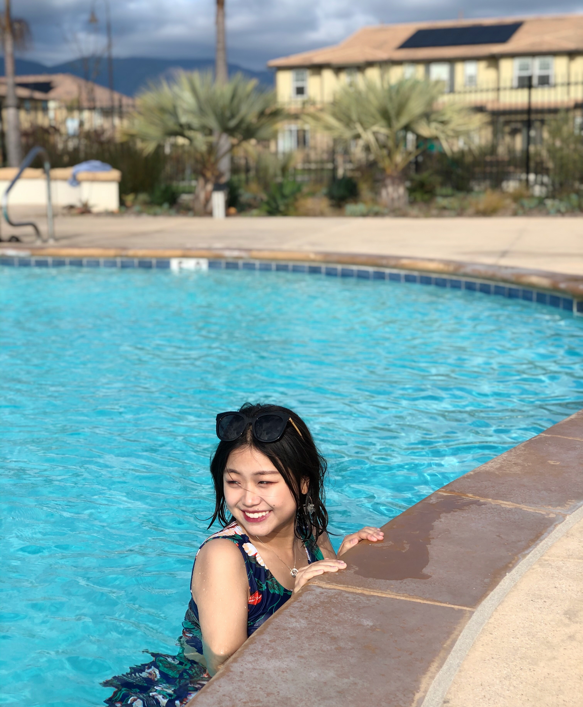

This is Siqi. A girl who was born by the end of 20th century and who is passionate about life. I am currently a third year Computer Science student in UCSB. I like watch dramas, chat with people and I love singing. In my mind, people can't live without music, just like they can't live without air. This website will be about myself as well as my life, academically and not academically. Thank you for clicking in.